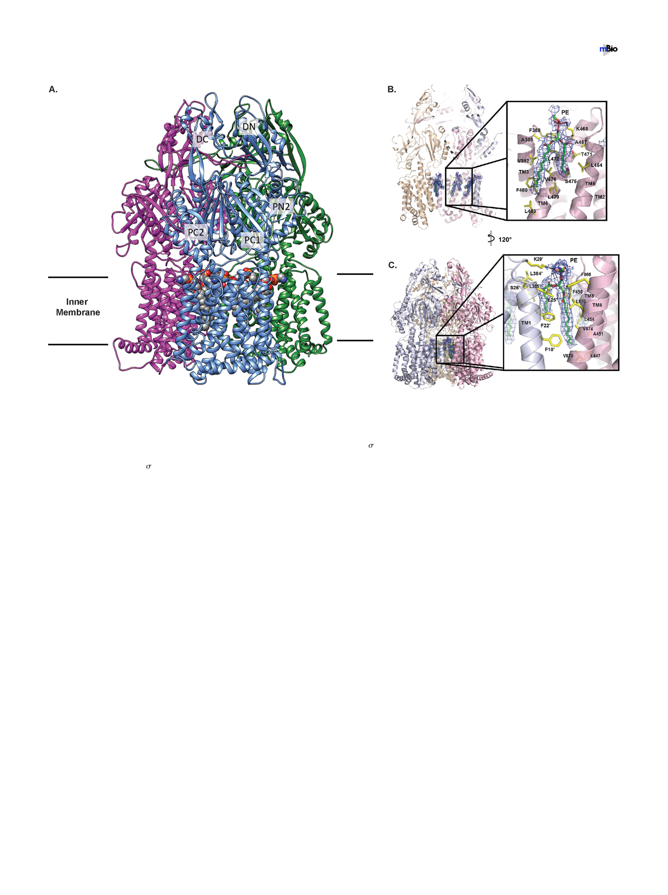

Cryo-EM Structure of A. baumannii Efflux Pump
®
FIG 2 Overall cryo-EM structure of the A. baumannii AdeB multidrug efflux pump. (A) Ribbon diagram of the structure of the AdeB trimer viewed in the
membrane plane. Each subunit of AdeB is labeled with a different color. Subdomains DN, DC, PN2, PC1, and PC2 are labeled on the front protomer. PN1 is
located behind PN2, PC1, and PC2 and is therefore not labeled in this view. No channel is formed in the periplasmic domain of each protomer. The bound PE
lipids are depicted as spheres (gray, carbon; blue, nitrogen; orange, phosphorus; red, oxygen). (B) The PE binding site at the interior wall of the central cavity
of an AdeB protomer. The EM density of the bound PE is in blue mesh and shown at 5 . The secondary structural elements of the AdeB protomer involved
in binding this lipid molecule are colored pink. (C) The PE binding site at the interface between two AdeB protomers. The EM density of the bound PE is in
blue mesh and shown at 5 . The secondary structural elements of the two AdeB protomers that form the protein-protein interface are colored pink and gray.
to distinguish between residues in the two subunits) are positioned to form favorable
hydrophobic interactions with the hydrocarbon chains of bound PE (Fig. 2C). Similar to
the other lipid site described above, this PE lipid interacts with a cationic lysine residue,
K29=, to form a weak hydrogen bond, further stabilizing the binding (Fig. 2C). We
suspected that this bound PE lipid, which is located at the protein-protein interface,
may be important for stabilizing the trimeric oligomerization of this multidrug efflux
pump. It is interesting to note that the locations of these two AdeB lipid-binding sites
coincide with the corresponding positions of two of the 24 bound lipid molecules
reported in the cryo-EM AcrB structure (29).
Periplasmic multidrug binding sites. Like other structures of HAE-RND efflux
pumps, a cleft is formed between subdomains PC1 and PC2 in the periplasm of AdeB
(Fig. 3). Presumably, a drug molecule entering into the periplasmic cleft will bind at the
proximal multidrug binding site. This drug will then pass through the gate loop
(G-loop) and be delivered to the distal multidrug binding site for extrusion. In AcrB, the
entrance of this periplasmic cleft is surrounded by residues F664, F666, L668, R717, and
L828, and these residues have been shown to be important for drug recognition (34, 36,
37). However, these residues are not conserved among the HAE-RND pumps, suggest-
ing that they may play a role in substrate specificity and selectivity. The corresponding
five residues in AdeB are M656, V658, P660, W708, and A819 (Fig. 3A). These residues
are mostly hydrophobic in nature, suggesting that AdeB may tend to choose hydro-
phobic compounds as the natural substrates. Interestingly, the entrance of the periplas-
mic cleft of CusA (30–32), a specific heavy-metal efflux (HME)-RND pump that recog-
nizes and extrudes Cu(I) and Ag(I) ions, is surrounded with residues N660, W662, P664,
L714, and D827. These residues are more polar and negatively charged in nature than
are those of AdeB and AcrB, suggesting that CusA may tend to select positively charged
July/August 2019 Volume 10 Issue 4 e01295-19
mbio.asm.org 5